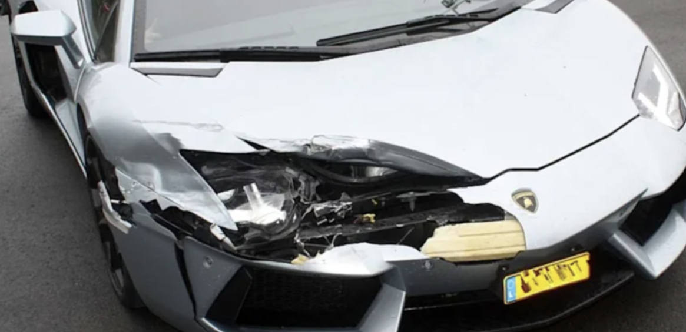

Schnell, unabhängig und transparent – wir vermitteln Sie an geprüfte Kfz-Sachverständige in Aschaffenburg und Umgebung.

KFZ Gutachter Markellos ist ein Vermittlungsservice für Kfz-Sachverständigenleistungen in Aschaffenburg und Umgebung. Wir selbst erstellen keine Gutachten – stattdessen verbinden wir Sie schnell und unkompliziert mit einem passenden, unabhängigen Kfz-Sachverständigen aus unserem Partnernetzwerk. So sparen Sie sich die zeitaufwändige Suche und erhalten dennoch eine rechtssichere, professionelle Begutachtung Ihres Fahrzeugs.
Nicht jeder Sachverständige wird Partner in unserem Netzwerk – wir prüfen sorgfältig, bevor wir vermitteln.
Nachweis der fachlichen Qualifikation als Kfz-Sachverständiger.
Praxiserfahrung und bisherige Kundenbewertungen werden gesichtet.
Nur Partner, die kurzfristige Termine in der Region anbieten können.
Kundenfeedback fließt fortlaufend in die Zusammenarbeit ein.